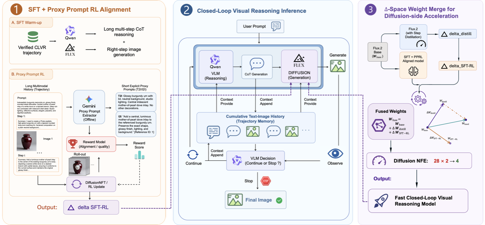
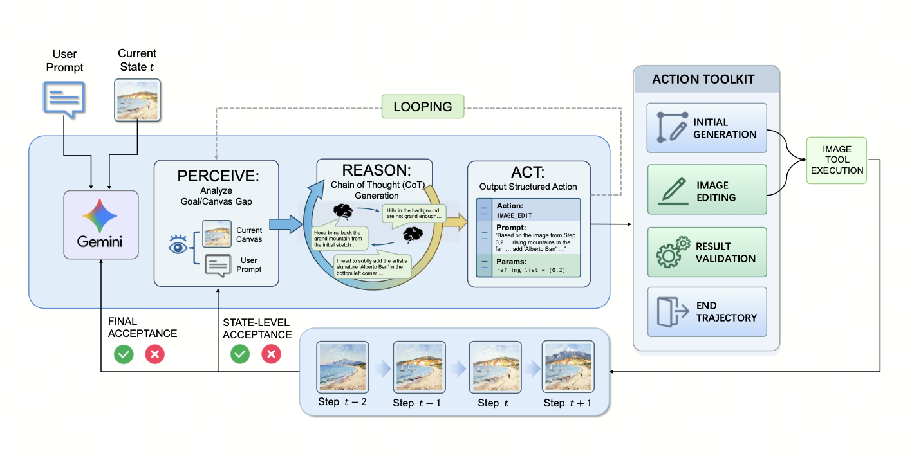
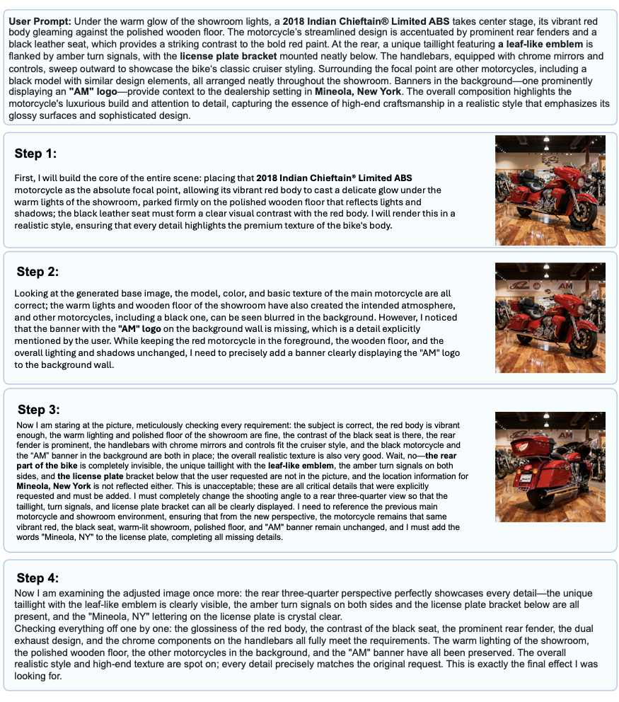
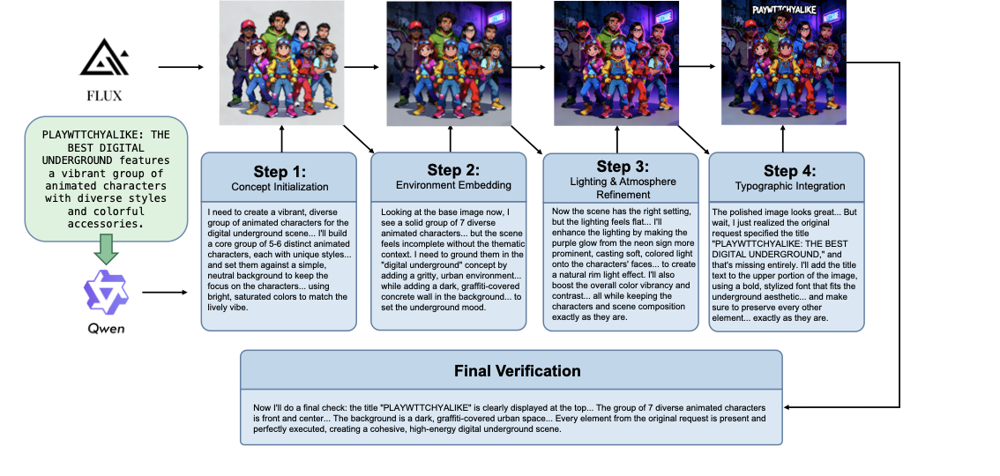
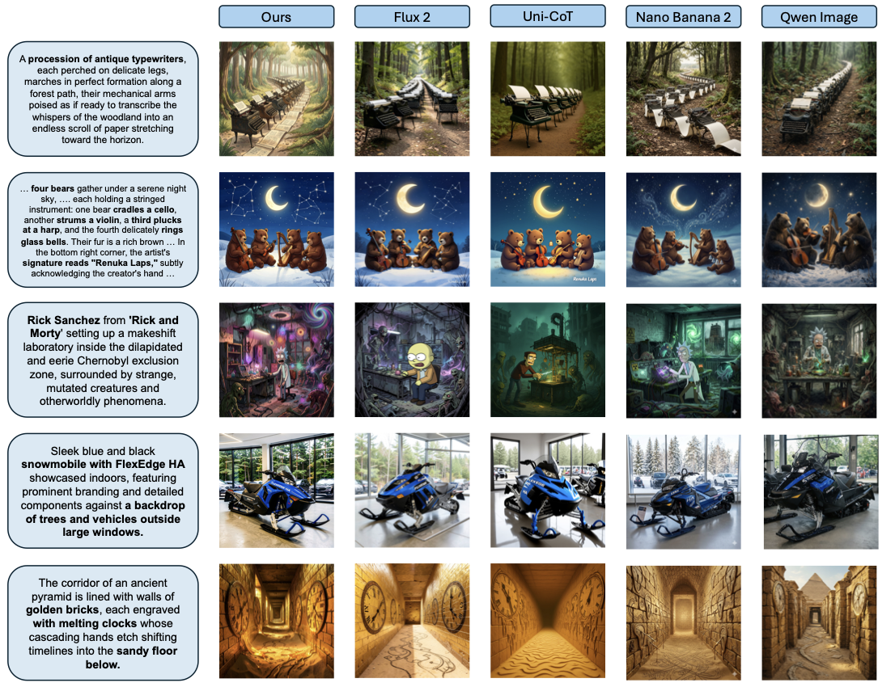
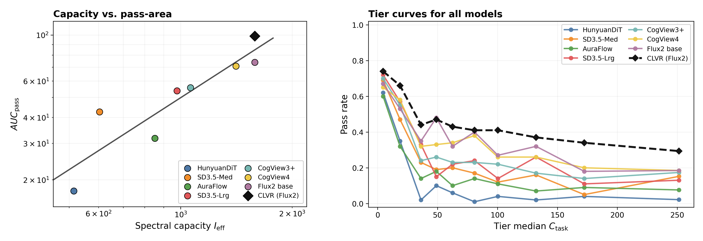

1
Single-step generation hits a complexity ceiling.
As prompts become dense with entities, relations, and constraints, simply scaling the backbone gives diminishing returns.
CLVR turns complex text-to-image generation into an iterative visual reasoning loop: plan, generate, verify, correct, and stop when the image satisfies the prompt.
PRISM qualitative results, stitched left to right: panel A · panel B · panel C.
Key Takeaways
The page intentionally keeps only the claims a reader should remember after a fast skim.
As prompts become dense with entities, relations, and constraints, simply scaling the backbone gives diminishing returns.
CLVR uses visual feedback after each generation action, so errors can be detected and corrected before they cascade.
PPRL distills messy multimodal histories into explicit step-level reward targets for more stable diffusion alignment.
DSWM reuses distillation priors instead of re-distilling costly reasoning trajectories, reducing each step to 4 NFEs.
Figure 1
The gallery appears once at the top of the page. Use the navigation link “Figure 1” to jump back when needed.
Method
Each component exists to remove a specific bottleneck in reasoning-based image generation.
Data
A state-constrained controller generates visual reasoning trajectories, with step-level validation and global A/B judging against single-step baselines.
Training
A teacher VLM converts long interleaved histories into explicit text and reference-image rewards, enabling step-wise diffusion optimization.
Inference
The diffusion model receives the evolving reasoning trace, preserving global constraints across multiple rounds of generation and editing.
Deployment
Alignment and distillation increments are merged in weight space, keeping reasoning ability while inheriting fast 4-step decoding.
Paper Figures
These panels are not redrawn for the webpage. They directly reuse the figures included in the LaTeX manuscript.

Pipeline overview covering SFT/PPRL, closed-loop inference, and Δ-Space Weight Merge.
Open figure
Perceive-Reason-Act data synthesis with step-level visual verification.
Open figure
Example synthesized trajectory showing visual feedback and self-correction.
Open figure
CLVR inference case from concept initialization through environment, lighting, and final typographic integration.
Open figure
Qualitative comparison against strong generation baselines on challenging prompts.
Open figure
Probe figure showing AUC pass and tier-wise degradation under increasing task complexity.
Open figureResults
Selected headline numbers from GenEval, WiseBench, PRISM, ImagineBench, and the semantic complexity probe.
Overall scores across the paper's core benchmarks. Higher is better.
| Model | GenEval | WiseBench | PRISM | ImagineBench |
|---|---|---|---|---|
| FLUX.2 4B base | 0.74 | 0.44 | 65.7 | 6.267 |
| CLVR 4B | 0.87 (+0.13) | 0.74 (+0.30) | 76.3 (+10.6) | 8.435 (+2.168) |
| FLUX.2 9B base | 0.80 | 0.52 | 72.7 | 7.274 |
| CLVR 9B | 0.88 (+0.08) | 0.76 (+0.24) | 82.1 (+9.4) | 8.830 (+1.556) |
| GPT-4o reference | 0.84 | 0.80 | 86.3 | 8.560 |
GenEval ablation isolates closed-loop training, proxy-prompt RL, and DSWM deployment acceleration.
| Setting | Counting | Position | Color Attr. | Overall | Takeaway |
|---|---|---|---|---|---|
| FLUX.2 4B base | 0.62 | 0.52 | 0.59 | 0.74 | Single-step baseline. |
| + CLVR without PPRL | 0.76 | 0.71 | 0.57 | 0.78 | Closed-loop decomposition already improves hard spatial/counting cases. |
| + CLVR with PPRL | 0.75 | 0.74 | 0.72 | 0.83 | Proxy prompts stabilize long-context alignment. |
| + CLVR + PPRL + DSWM | 0.85 | 0.85 | 0.71 | 0.87 | Reasoning alignment and distillation priors merge without destructive interference. |
CLVR raises pass-complexity AUC without increasing the FLUX.2 4B backbone capacity proxy.
| Model | DiT Params | I_eff | Pass | Median C_task | AUC Pass |
|---|---|---|---|---|---|
| SD3.5-Med | 2.5B | 604.11 | 0.244 | 28.46 | 42.53 |
| SD3.5-Lrg | 8.0B | 977.86 | 0.288 | 34.65 | 53.79 |
| CogView4 | 6.0B | 1411.05 | 0.352 | 50.54 | 70.83 |
| FLUX.2 base | 4.0B | 1586.36 | 0.372 | 50.32 | 73.89 |
| CLVR (FLUX.2) | 4.0B | 1586.36 | 0.451 | 53.76 | 98.79 (+24.90) |
Average end-to-end wall-clock time in seconds (same iteration count). Speedup is simply Base ÷ DSWM. All rows use the same definition; none is visually emphasized as “the main result”.
| Iterations | Base 28-step | DSWM 4-step | Speedup | Why it matters |
|---|---|---|---|---|
| 1 | 192.4s | 12.6s | 15.3× | Fast enough for simple prompts. |
| 2 | 287.0s | 25.5s | 11.3× | Most common GenEval trajectory length. |
| 3 | 471.7s | 38.2s | 12.3× | Common for harder PRISM prompts. |
| 4 | 707.7s | 52.3s | 13.5× | Keeps long reasoning loops practical. |
Bottom Line
CLVR makes that loop practical: verified data keeps plans grounded, PPRL gives long-context rewards a stable target, and DSWM preserves deployment speed without expensive reasoning-data re-distillation.
Prompts with many entities, relations, attributes, text, or world-knowledge constraints.
CLVR consistently improves over its FLUX.2 base and narrows the gap to proprietary models.
Closed-loop reasoning can be accelerated to a deployable regime via 4-step DSWM decoding.
{kind=link}